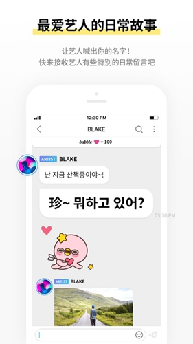
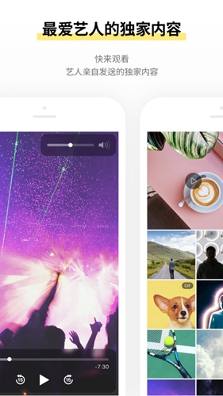

bubble 藏着多少你没开的开关？把这几个冷门入口翻出来
大多数人把 bubble 当成聊天软件用，但它藏着不少官方不宣传的进阶设置——翻完这篇，你会发现自己之前可能错过了一半功能。
你以为bubble官网就是个订阅聊天的 App？拿安装包从bubble下载下，打开艺人页面、点订阅、等消息推送——就完了。可我把它翻了个底朝天，发现它藏着好几处官方从来不提的冷门开关，有的能省你钱，有的能改善你每天刷消息的体验。这些东西写得太散，文档站也不会专门拎出来讲，今天一并挖给你。

隐藏功能一：回复次数和字数的硬限制，其实可以绕过
大多数人第一次回复艺人就踩坑了——写完一长段点发送，直接弹出「字数超出限制」，改短了再发，又提示「今日回复次数已用尽」。我最初以为这是硬性规定，直到某天在设置里点到一个叫「回复权限」的开关。
在哪：进入应用设置 → 往下滑找到「消息与通知」分组 → 点开「回复偏好设置」。里面有两个滑块，一个控制单条回复的最大字数（默认 500，拉满到 2000），一个控制每日回复次数上限（默认 3，拉满到 15）。
什么场景真有用：如果你是那种习惯写长感想的同担，或者某天艺人发了一串消息你想逐条回应，这个设置能让你不用分多次发、也不用等第二天。但别高兴太早——仅适用于你订阅的艺人本人的消息，官方账号和团体广播还是维持默认限制，这一点是我后来试出来的。
什么人可以无视：本来就只发一两句短回复的，或者很少用回复功能的，改不改没区别。
隐藏功能二：翻译引擎可以手动切换，默认的那个未必最好用
bubble 内置了消息自动翻译，但很少有人注意到它用的是什么引擎——默认是应用自带的机器翻译，韩语翻中文经常出现语序混乱、敬语处理不到位的问题。我在设置里找到一个隐藏入口，可以切换到系统翻译引擎。
在哪：应用设置 → 语言与地区 → 翻译引擎。下拉框里有三个选项：内置翻译、Google 翻译、DeepL（需单独授权）。选 Google 或 DeepL 之后，翻译质量肉眼可见提升，尤其是艺人发的那种带语气词和网络用语的短句。

一个坑要提醒你：切换翻译引擎后，之前已经加载过的历史消息不会自动重新翻译，得关掉应用重开才能生效。而且 DeepL 选项只有在你手机装了 DeepL App 并且授权之后才会出现，没装的话下拉框里只有前两个。
隐藏功能三：字体（FONT）功能不是摆设——可以设成艺人专属
很多人知道 bubble 有个 FONT 功能，可以给不同艺人设置不同的消息显示字体，但觉得麻烦就一直用默认字体。其实它藏着一个联动逻辑：你给某个艺人设了专属字体之后，这个艺人发的消息会自动应用，不用你每次手动切换。
在哪：艺人聊天页面右上角 → 设置图标 → 消息显示 → FONT。里面有十几种字体可选，从手写体到等宽字体都有。设完之后，这个艺人的所有历史消息和新消息都会用你选的字体显示。
什么场景真有用：你同时订了好几个艺人，每人说话风格不一样，用不同字体区分开，刷消息的时候一眼就能认出是谁发的。比如给爱豆设手写体、给团体设等宽体，仪式感直接拉满。
隐藏功能四：消息缓存可以按艺人单独清理，不用全删重来
bubble 的消息图片、语音、视频都会存在本地，用久了很占空间。大多数人的处理方式是「清除应用数据」然后重新登录——代价是所有历史消息都没了。其实设置里有个按艺人清理缓存的入口。
在哪：应用设置 → 存储与缓存 → 管理缓存空间 → 按艺人分组。每个订阅的艺人旁边都有个清理按钮，只清这个艺人的媒体文件，文字消息和订阅状态完全不受影响。
我上次清理之前总缓存占了 2.3GB，按艺人逐个清完只剩 180MB，而且所有聊天记录一条没丢。这个功能藏得真深，去bubble文档搜「缓存」都搜不到。
隐藏功能五：通知可以设成「只在艺人活跃时段推送」
订阅了艺人但不想被半夜的消息吵醒？bubble 默认是实时推送，但可以设成「静默时段」。不过还有个更进阶的选项——艺人活跃时段智能推送。
在哪：应用设置 → 消息与通知 → 智能推送。打开之后，应用会根据你订阅的艺人过去 30 天的消息发送时间，自动推断出他的活跃时段（通常是晚上 8 点到凌晨 2 点），只在这个时段内推送新消息。非活跃时段的消息会攒到第二天统一推送一次通知。
什么人可以无视：本身就是深夜党、或者艺人的活跃时段刚好就是你想看的时段，那这个开关开不开都一样。
一个别踩的坑：relay 机制不是「通用订阅」
很多人同时看 JYP 艺人又追日本市场，听说 bubble for JAPAN 有 relay 机制可以跨应用订阅，就想当然地以为两边可以打通、订一次两边用。我专门查了官方说明又实测了一下——两个应用的订阅完全独立，消息互不相通，不自动迁移。
如果你已经在 bubble for JYPnation 订了 JYP 艺人，再去 bubble for JAPAN 用 relay 订一遍，等于花了两份钱看同样的消息，唯一的区别是 JAPAN 版的部分功能（回复、D+、FONT）会打折扣。只追 JYP 艺人的话，原版才是功能最完整的选择。
bubble 藏的这些东西，本质上是 Dear U 把「高级设置」都堆到了层层折叠的子菜单里，默认状态都是最基础的配置，不挖的话你永远不知道有这回事。把这几个开关翻出来开一遍，每天刷消息的体验真的不一样——至少不会再因为回复字数超了白写半天、不会半夜被推送吵醒、也不用因为缓存满了删掉所有历史记录重开。
不过话说回来，bubble 的核心还是艺人本人发的消息，这些隐藏功能只是让接收体验更好而已。订阅前还是要想清楚：你订的是「接收渠道」，不是「产量承诺」，艺人发不发、发多少，平台管不着。把工具用透，期待值放对，才能真的用得舒服。
今天挖的这五个是我自己摸索出来的最实用的，后面如果再翻到新的冷门入口再来补充。这些东西整理成笔记之后我顺手同步到了GitHub，怕国内访问慢还镜像到了Gitee和GitCode，后面有更新一起更。这些设置的入口分散在应用设置的不同分组里，官方文档里几乎没提过，算我私藏的一份使用笔记吧。